3.3. Evaluating staging/signal quality (SOAP)
As described here, Luna's SOAP command can quickly evaluate whether there are gross misalignments or other inconsistencies between staging and signal (typically, but to necessarily EEG) data.
In brief, SOAP tries to predict existing staging given one or more
(EEG) signal. If the prediction within a single
individual is poor (a low kappa), this suggests that the signal(s)
and/or staging annotations are problematic (i.e. assuming the signals are
normally expected to covary with true sleep stage).
Internally, SOAP performs a spectral analysis (Welch PSD) per epoch, then applies dimension reduction (PCA) over the epochs. It selects the components that are associated with stage labels. It then fits a linear discriminant analysis (LDA) model to predict stage given the PCs (just for that one individual), and compares the fitted to the observed values to obtain measures of accuracy (e.g. kappas, etc).
Note that this is a qualitatively different exercise than automated staging (which we address in the next segment). Here we are using a "prediction-like" approach only to assess the general association between existing staging and signals. As such, the kappa should not be interpreted in the same manner as is typically done for automated staging (true prediction).
Evaluating stage consistency
Here we'll run SOAP for a single channel (C3):
luna harm1.lst -o out.db -s ' SOAP sig=C3 '
Restrictions using SOAP
In a previous
step, we replaced one v2 recording (F01) that only had N2 epochs
with the correct, original version: if we hadn't done this, we'd
have to skip F01 here, as SOAP would fail, as the
SOAP model relies of intra-individual variation between
different stages to build a model.
Also note that we've resolved issues with misaligned staging already: if
we hadn't done this, we'd need to add EPOCH align before running
SOAP.
We now extract the per-channel output for a subset of variables; (the -p 2 option restricts output
to two decimal places):
destrat out.db +SOAP -r CH -v NSS K K3 ACC ACC3 -p 2
ID CH ACC ACC3 K K3 NSS
F01 C3 0.86 0.92 0.80 0.84 5.00
F02 C3 0.64 0.76 0.42 0.44 5.00
F03 C3 0.46 0.68 0.26 0.40 5.00
F04 C3 0.50 0.71 0.16 0.17 5.00
F05 C3 0.85 0.92 0.79 0.83 5.00
F06 C3 0.85 0.93 0.77 0.82 5.00
F07 C3 0.88 0.92 0.82 0.87 5.00
F08 C3 0.78 0.88 0.70 0.76 5.00
F09 C3 0.90 0.95 0.83 0.87 5.00
F10 C3 0.82 0.89 0.75 0.79 5.00
M01 C3 0.89 0.93 0.78 0.72 5.00
M02 C3 0.91 0.96 0.82 0.90 5.00
M03 C3 0.82 0.89 0.74 0.79 5.00
M04 C3 0.85 0.93 0.80 0.86 5.00
M05 C3 NA NA NA NA -1.00
M06 C3 0.88 0.93 0.82 0.87 5.00
M07 C3 0.87 0.92 0.81 0.86 5.00
M08 C3 0.88 0.95 0.83 0.91 5.00
M09 C3 0.82 0.91 0.74 0.75 5.00
M10 C3 0.81 0.94 0.73 0.84 5.00
The K variables are the kappa statistics for SOAP; the ACC are
the corresponding simple accuracy metrics. The variables K3 and
ACC3 are the corresponding values for a three-class (NR vs R vs W)
classification, instead of the default 5-class one. NSS is the number of unique
stages observed (those with at least a
minimum required number of observations/epochs to allow SOAP to construct a
predictive model, 10 by default, set by req-epochs).
We see that M05 has a value of -1 for NSS and no values for the kappa/accuracy
statistics. Here, -1 is a special code that means no components were retained that
were sufficiently associated with observed stage, a prerequisite for building the LDA model.
If we look at the console output, you'll see the error thrown:
CMD #1: SOAP
options: sig=C3
using LDA for primary predictions
------------------------------------------------------------
fitting SOAP model for single channel C3
read 1 feature specifications (99 total features on 1 channels) from _1
set epochs to default 30 seconds, 933 epochs
set 0 leading/trailing sleep epochs to '?' (given end-wake=120 and end-sleep=5)
applying Welch with 4s segments (2s overlap), using median over segments
expecting 99 features (for 933 epochs) and 1 channels
standardizing X
final feature matrix X: 99 features over 933 epochs
of 933 total epochs, valid staging for 933, and of those 933 passed outlier removal
outlier counts: flat, Hjorth, components, trimmed -> total : 0, 0, 0, 0 -> 0
re-standardizing X after removing bad epochs
epoch counts: N1:84 N2:593 N3:83 R:75 W:98
final epoch counts: N1:84 N2:593 N3:83 R:75 W:98
final count of valid epochs is 933
0 p<0.01 stage-associated components, bailing
*** fewer than 2 non-missing stages for this individual, cannot complete SOAP
By default, SOAP only uses components that are nominally (p < 0.01)
associated with staging when running the LDA. With very unusual recordings,
it can sometimes happen that no components meet this criterion (which is itself
a warning about potentially poor staging). If you see an NSS of -1 and
no emitted kappa statistics, you can assume there is a catastrophic
problem with the signal/staging consistency (i.e. extreme low
kappas). We can force SOAP to build a model by altering the p < 0.01
threshold, e.g. setting to 1 or a very high p-value means that
most/all will be included :
luna harm1.lst id=M05 -o out.db -s ' SOAP sig=C3 pc=0.9 '
retaining 9 of 10 PSCs, based on ANOVA p<0.9
Confusion matrix: 5-level classification: kappa = 0.00, acc = 0.64, MCC = 1.00
Obs: N1 N2 N3 R W Tot
Pred: N1 0 0 0 0 0 0.00
N2 84 593 83 75 98 1.00
N3 0 0 0 0 0 0.00
R 0 0 0 0 0 0.00
W 0 0 0 0 0 0.00
Tot: 0.09 0.64 0.09 0.08 0.11 1.00
Confusion matrix: 3-level classification: kappa = 0.00, acc = 0.81, MCC = 1.00
Obs: NR R W Tot
Pred: NR 760 75 98 1.00
R 0 0 0 0.00
W 0 0 0 0.00
Tot: 0.81 0.08 0.11 1.00
Now we see that kappa/accuracy statistics have been calculated, but the kappas are zero as all epochs have the same prediction (N2). In other words, this is telling us that SOAP was completely unable to model the signal/staging relationship, and so will always output the most common stage label (N2) as the best guess. (This is also a good reminder why we look at kappa statistics and not accuracy values, i.e. accuracy is still 0.81 in the 3-class case.)
Plotting the K kappa statistic (fifth column from above, and setting
the NA value to 0 for M05), we can see four individuals who appear
to be clear outliers: points colored red F02, F03, F04 and
M05:
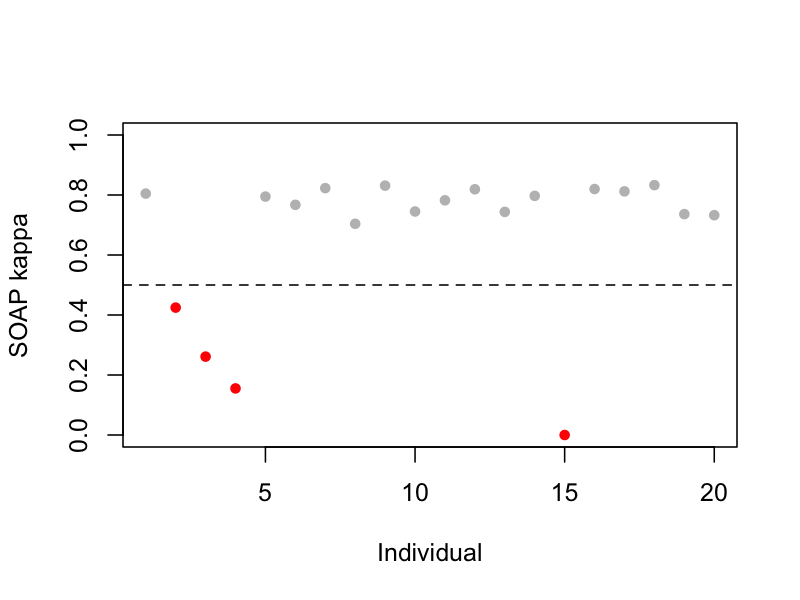
This suggests that four recordings likely have some issue with their staging/signal consistency, which we'll investigate below.
Indeed, if we consult the details of manipulations, we'll see that all four individuals had some major type of issue with their staging:
-
F02: staging epochs were shifted by 22 epochs (>10 minutes) relative to the true signal times (e.g. which can be easily caused by the EDF start time being misspecified, etc) -
F03andF04had their annotation files literally swapped with one another -
M05had all staging information scrambled completely at random
As such, it is interesting to note that SOAP saw M05 as the "most
severe" class of problem, with a kappa of 0 (and with it initially
refusing even to build a model, returning NSS of -1). This is
because the swapped/shifted stagings still broadly approximate a
"typical" hypnogram, and so will tend to show a non-trivial level of
correspondence to another (typical) sleeper's.
Note that SOAP won't pick up every possible type of problem with staging: for
example, M02 has severely truncated staging (about half the night missing), but
this class of error is effectively invisible to SOAP. (Of course, this particular
issue would be trivial to detect by other means, e.g. simply viewing hypnograms or counting the
number of missing/lights-on epochs).
Interpreting SOAP kappa statistics
For SOAP "low" kappa
statistics mean roughly below 0.5 or so. This indicates a likely
only-modest relationship between the properties of signal (EEG)
and staging. As we expect sleep EEG to track with staging (after
all, it is the primary basis for determining stage, whether by eye
or automatically...), this could be due to a) a
bad/noisy/misaligned signal, b) bad/misaligned staging, or c)
both. The threshold of 0.5 should not be considered to be fixed in
stone, however. For example, individuals with short or unusual
sleep periods may yield relatively low kappa values, as might cases where only
nonstandard signals are available (e.g. a bipolar montage that
doesn't captured stage-dependent activity well).
Epoch-level review
If we add the epoch flag to SOAP, it outputs epoch-level
information: the observed stage label (PRIOR) plus the posterior
probabilities (PP_N1, PP_N2, etc) and predicted stage (PRED).
This is turned off by default as the outputs can get large for very
large datasets. We'll also add pc=0.9 so that SOAP emits
values for M05:
luna harm1.lst -o out.db -s ' SOAP sig=C3 epoch pc=0.9 '
Now we see an additional E-by-CH stratum in the output:
destrat out.db
--------------------------------------------------------------------------
out.db: 1 command(s), 20 individual(s), 32 variable(s), 187291 values
--------------------------------------------------------------------------
command #1: c1 Sat Sep 7 09:45:46 2024 SOAP epoch sig=C3
--------------------------------------------------------------------------
distinct strata group(s):
commands : factors : levels : variables
------------:-----------------:-------------:---------------------------
[SOAP] : CH : 1 level(s) : ACC ACC3 F1 F13 F1_WGT K K3 MCC
: : : MCC3 NSS PREC PREC3 PREC_WGT RECALL
: : : RECALL3 RECALL_WGT
: : :
[SOAP] : E CH : (...) : DISC DISC3 INC PP_N1 PP_N2 PP_N3
: : : PP_NR PP_R PP_W PRED PRIOR
: : :
[SOAP] : CH SS : 6 level(s) : DUR_OBS DUR_PRD F1 PREC RECALL
: : :
: : :
[SOAP] : CH VAR : 10 level(s) : INC PV
: : :
[SOAP] : CH SS ETYPE : 36 level(s) : ACC N
: : :
[SOAP] : CH NSS PRED OBS : 34 level(s) : N P
: : :
------------:-----------------:-------------:---------------------------
Extracting the epoch-level outputs, we can visualize in R:
destrat out.db +SOAP -r E CH > o.1
In R, we'll use a convenience plotting function (lpp2()) from lunaR:
library(luna)
d <- read.table("o.1",header=T,stringsAsFactors=F)
M06:
lpp2( d[ d$ID == "M06" , ] )
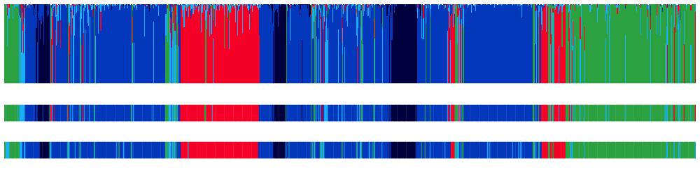
In the above plot, from bottom to top:
-
the lower row encodes the observed stages (
PRIOR) using the usual Luna stage colors (green/blues/red = W/N1,N2,N3/REM) -
the middle row encodes the predicted stage (
PRED) -
the top row shows the posterior probabilties (i.e.
PREDis simply the stage with the highest posterior probability)
In the above plot, there is a clear correspondence between the observed stages and what the simple C3-based model is able to recontruct, which is reflected in the high kappa statistics for this individual. Most (N=16) of the plots look something like the above, i.e. with probabilties where a) the maximum is typically near 1.0 for each epoch (high model confidence) and b) the predictive stages tend to broadly align with the observed data, as expected.
In contrast, let's look at the four cases were we had very low kappas:
First, here is M05, for which the stage labels
were completely scrambled in our manipulation:
lpp2( d[ d$ID == "M05" , ] )
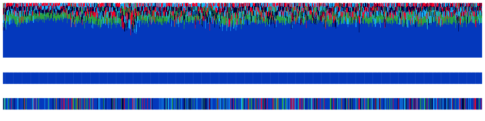
Here we see how every epoch is predicted to be N2: the model basically has no information.
Next, we'll look at F03 and F04 - these were both "valid" hypnograms (versus being completely scrambled), but were
incorrectly assigned to the wrong individuals:
lpp2( d[ d$ID == "F03" , ] )
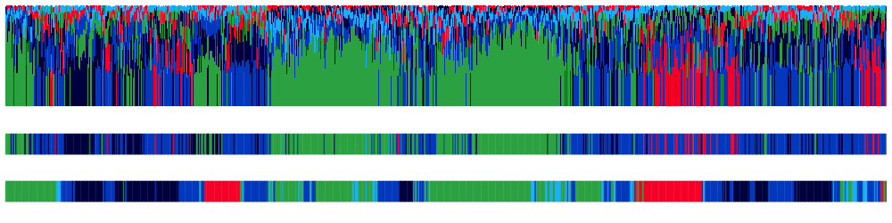
We see a generally "messy" posterior distribution - lot's of low
confidence predictions and a lack of alignment. We see a similar
picture for F04:
lpp2( d[ d$ID == "F04" , ] )
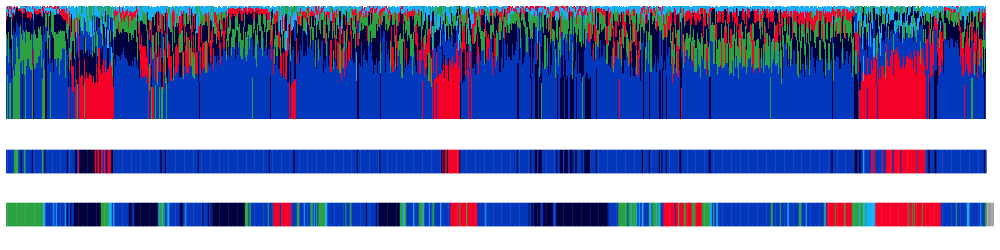
Finally, let's look at a more subtle case: for F02, we simply shifted the stage labels by about 10 minutes:
lpp2( d[ d$ID == "F02" , ] )
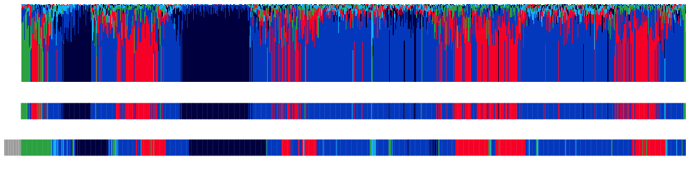
Because of the shifting, you can see how the first portion of the
lower plot is gray, meaning it is unstaged (and thus not analyzed by
SOAP). We see a general lack of alignment -- although, simply by
eye it does appear (in this particular case) that the predictions are
shifted in time, meaning enough valid epochs must have overlapped to
build some kind of valid model. We can leverage this fact to
realign signals and staging, as we'll do below.
Multi-channel SOAP
Looking at the patterns of SOAP coefficients across multiple channels can be informative in the hd-EEG case:
-
if all channels have low kappas, then the problem is likely with the staging
-
if at least a few channels have high/normal kappas, then the problem is more likely to be with the other low-kappa channels
Thus SOAP can be a useful way to spot bad channels even if the
staging information is good on the whole.
Here we'll re-run SOAP on all channels. Note, it may take five
minutes or so to evaluate all 1,140 (20 * 57) channels -- you can skip this
step without impacting the rest of the walkthrough and just look at
the results below, if you wish. We'll omit the epoch-level output.
luna harm1.lst -o out.db -s ' SOAP sig=${eeg} pc=0.9 '
destrat out.db +SOAP -r CH -v NSS K K3 > o.1
d <- read.table("o.1",header=T,stringsAsFactors=F)
SOAP finish (which should be the case with pc=0.9)
table( d$NSS )
5
1139
table( d$ID )
F01 F02 F03 F04 F05 F06 F07 F08 F09 F10 M01 M02 M03 M04 M05 M06 M07 M08 M09 M10
57 57 57 57 57 57 57 57 57 57 57 57 57 56 57 57 57 57 57 57
Here we plot the 5-class kappa for all channels/individuals (colors indicate the individual):
plot( d$K , col = as.factor( d$ID ) , pch=20 ,
xlab = "Indiv/channel" , ylab = "SOAP kappa" , ylim=c(0,1) )
abline(h=0.5)
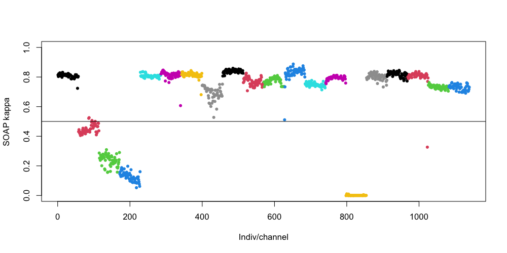
So, for the four "bad" individuals, we see that all channels have poor kappa scores: the cluster of points are all below (or near) a low kappa threshold of 0.5. From this, we'd conclude it wasn't that C3 was just a very bad channel for some people - rather, the problem likely lies with the staging (as we know to be the case here).
In contrast, this plot does point to a handful of channels that have
been flagged as bad - e.g. for M08, the red cluster of points third
to the last (rightmost) in the plot above. Here, one of the final
channels seems to be an outlier for that individual, falling well
below the kappa threshold.
We can identify this channel:
d[ d$ID == "M08" , c("CH","K") ]
CH K
969 Fp1 0.8002591
970 Fp2 0.7926766
971 AF3 0.7896391
972 AF4 0.8096110
973 F7 0.8162281
974 F5 0.7973992
975 F3 0.8133728
976 F1 0.8092905
977 F2 0.8110485
978 F4 0.8102376
979 F6 0.8099534
980 F8 0.7954398
981 FT7 0.8198113
982 FC5 0.8235413
983 FC3 0.8178465
984 FC1 0.8159907
985 FC2 0.8191978
986 FC4 0.8230782
987 FC6 0.8175959
988 FT8 0.7998662
989 T7 0.8237364
990 C5 0.8279041
991 C3 0.8369470
992 C1 0.8010708
993 C2 0.8217165
994 C4 0.8177090
995 C6 0.8115075
996 T8 0.8125639
997 TP7 0.8222410
998 CP5 0.8222884
999 CP3 0.8261689
1000 CP1 0.8371216
1001 CP2 0.8141448
1002 CP4 0.8166989
1003 CP6 0.8057053
1004 TP8 0.7921345
1005 P7 0.8207816
1006 P5 0.8199782
1007 P3 0.8212534
1008 P1 0.8001374
1009 P2 0.8050327
1010 P4 0.8108632
1011 P6 0.8129150
1012 P8 0.8081847
1013 PO3 0.8077789
1014 PO4 0.8021840
1015 O1 0.8041398
1016 O2 0.7922199
1017 AFZ 0.7957461
1018 FZ 0.8047130
1019 FCZ 0.8188830
1020 CZ 0.8229660
1021 CPZ 0.8102523
1022 PZ 0.8140062
1023 POz 0.3263965 <--- outlier
1024 OZ 0.7699115
1025 FPZ 0.7938324
If you saved the file tmp/hjorth.1 from the earlier signal
review step, we can review it again here:
library(luna)
d <- read.table( "tmp/hjorth.1" , header=T, stringsAsFactors=F)
d$H1 <- log( d$H1 )
Just looking at the plots for H1 and H2, we can see there is
indeed something off with POz (the midline channel second to the
bottom) for M08:
dd <- d[ d$ID == "M08" , ]
par(mfcol=c(3,1), mar=c(0.5,0.5,0.5,0.5))
ltopo.xy( dd$CH , dd$E , dd$H1 , z = dd$H1 , pch=20 , col = lturbo( 100 ) , cex=0.2 , xlab="Epoch", ylab="log(H1)" )
ltopo.xy( dd$CH , dd$E , dd$H2 , z = dd$H2 , pch=20 , col = lturbo( 100 ) , cex=0.2 , xlab="Epoch", ylab="H2" )
ltopo.xy( dd$CH , dd$E , dd$H3 , z = dd$H3 , pch=20 , col = lturbo( 100 ) , cex=0.2 , xlab="Epoch", ylab="H3" )
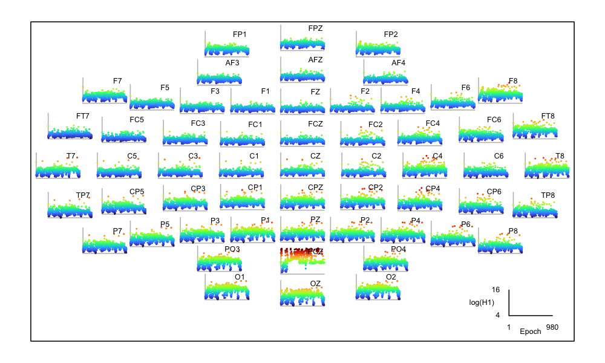
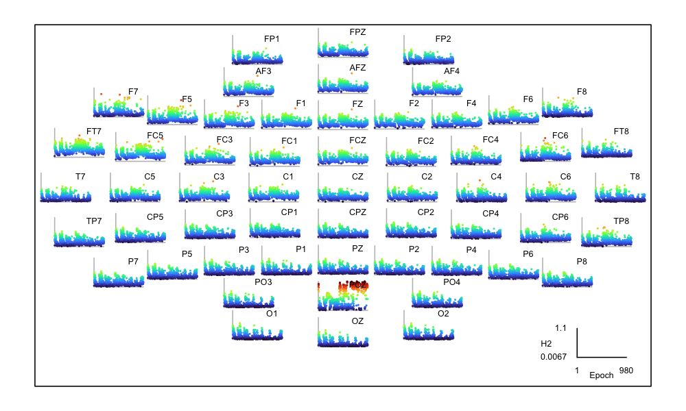
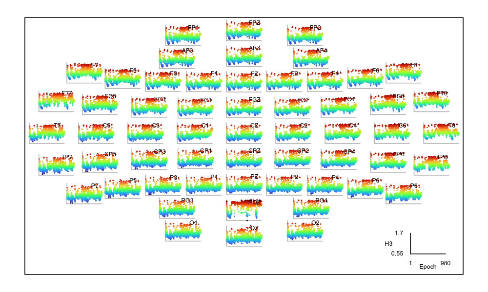
This type of issue will most likely to captured by standard
channel/epoch QC procedures (and likely corrected with
interpolation) so SOAP is not necessarily the optimal way to catch
such issues. Nonetheless, the convergence is reassuring.
Aligning misaligned staging
There is nothing we can do for the scrambled case, M05: as is
evident by simply looking at the hypnogram, it needs replacing (or
using automated staging, etc). But can we do anything to
potentially salvage the manual staging for the other three recordings?
First we'll consider F02. If we have a low SOAP kappa but the
predictions look "shifted" - or, more likely, if we know that the
timing information has been lost on the staging (e.g. it has
nonsensical time-stamps starting in the mid-morning, when the EDF
starts in the evening, etc), then we can turn to Luna's
PLACE as
described in this
vignette.
PLACE requires a simple .eannot style text file of the stage
labels: these stages will be aligned to the epochs in the EDF. We can use
the STAGE command (which is just a minimal version of
HYPNO epoch) to output these stage labels:
luna harm1.lst id=F02 -s STAGE min > stg.txt
We can now run PLACE, passing stg.txt to the required stages
option and telling it to write any new (realigned) solution to
new.eannot:
luna harm1.lst id=F02 -o out.db -s PLACE sig=C3 stages=stg.txt out=new.eannot
As described in the
vignette,
PLACE shifts the annotations, one epoch at a time, to find the
optimal alignment (highest kappa value). In the console log, it
outputs:
read 861 epochs from stg.txt
based on EDF, there are 861 30-s epochs
requiring 0.1 proportion of EDF, and 0.5 of supplied stages overlap
...
optimal epoch offset = -22 epochs (kappa = 0.774458)
which spans 839 epochs (of 861 in the EDF, and of 861 in the input stages)
We can extract the fit for all possible epochs:
destrat out.db +PLACE -r OFFSET > o.1
In R:
d <- read.table("o.1",header=T,stringsAsFactor=F)
plot( d$OFFSET , d$K , type="n" , xlab="Offset (epochs)" , ylab="Kappa" , xlim=c(-500,500) )
abline(v=c(0,-22), col=c("gray","red") )
lines( d$OFFSET , d$K , type="l" , col="darkgreen" ,lwd=2)
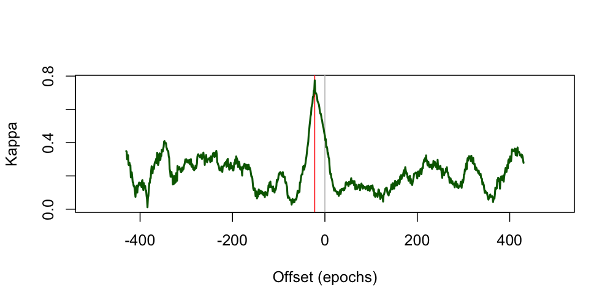
All other things being equal, when the output of PLACE looks like
this (i.e. a sharp peak at one high-kappa value), you can be confident
this is a likely correct solution (especially if you had reason to
believe the stage timings were misplaced, as can sometimes happen when working
with archival data, etc). Zooming into the actual values plotted around the
peak at an offset of -22 epochs, we can see how dramatically it drops off - i.e.
PLACE can resolve the alignment to a single epoch (although this depends on the length
and nature of the recording):
destrat out.db +PLACE -r OFFSET/-25,-24,-22,-21,-20 -v K K3 -p 2
ID OFFSET K K3
F02 -25 0.68 0.65
F02 -24 0.71 0.70
F02 -22 0.77 0.78
F02 -21 0.71 0.73
F02 -20 0.70 0.69
The file new.eannot contains new annotations; note, the last 22 rows
are set to ? as the stages been been shifted "backwards" in time
by 22 epochs. So, we've "solved" the issue with F02.
Matching swapped annotations
What about the two remaining individuals, F03 and F04? If we
suspect that files have been swapped, we can in principle use SOAP
to figure this out.
Use of SOAP
This is definitely an edge case usage of SOAP, that might
not be practical in large samples. At a certain
point, it would probably be cleaner to use automated
staging to restage files, or even redo the manual staging.
We nonetheless include this as an illustration of how SOAP
works. There may also be cases where it is
not easy to perform automated stages (e.g. unusual EEG montages,
or even the lack of any EEG signals). In principle SOAP is
agnostic to channel type and could work with other signals that
covary with sleep stages, e.g. the EOG, EMG or
ECG even. It is beyond the scope of this walkthrough to
address these use cases, however.
Here we iterate through each of the 20 recordings but tell Luna to: a)
ignore that individual's real annotations (with skip-sl-annots=T
meaning to skip annotation files defined in the sample list) and b) to
instead read annotations from F03 and apply them to each EDF.
As our .annot files are encoded in elapsed seconds, not clock times,
it means that any file swaps might not have been self-evident; it also
let's us swap them in in this simple way (although in this particular case, all
recordings were forced to have the same 10pm start, and so this point is moot).
We can run for all EDFs, asking which of them seems to match the
staging in the file F03.annot the best, if not F03 itself?
luna harm1.lst skip-sl-annots=T annot-file=work/harm1/F03.annot \
-o out1.db -s SOAP sig=C3
Extracting and plotting the results (plotting code not shown):
destrat out1.db +SOAP -r CH -v K3 K
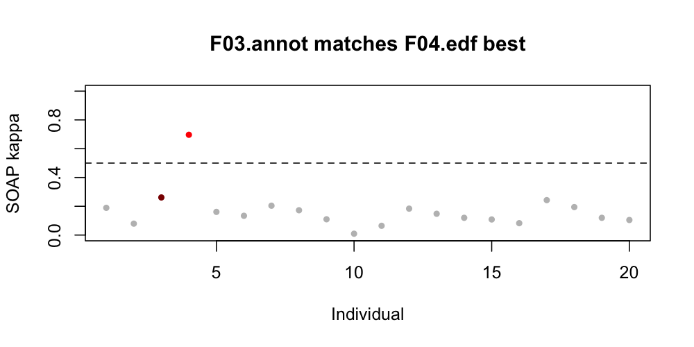
Although the plot colors F03 in dark red the only high
kappa in fact belongs to F04 (bright red), suggesting that
the annotations in F03.annot better match the signals in F04.edf.
Is the converse true? Given that F04 also had low original kappas,
perhaps the staging in F03.annot better matches the signals in
F04.edf? Again, we'll run this lining up F04.annot against all
N=20 EDFs:
luna harm1.lst skip-sl-annots=T annot-file=work/harm1/F04.annot \
-o out2.db -s SOAP sig=C3
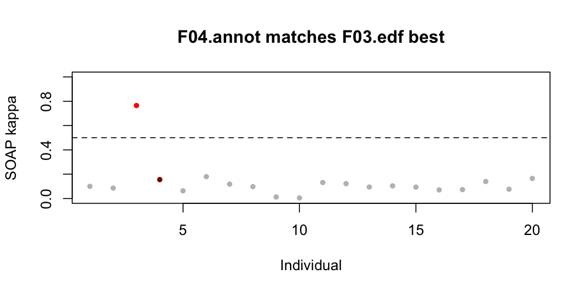
As in the first instance, although the nominal "owner" of these
annotations (F04) is dark red, the only EDF with a high kappa score
is F03 (bright red). So, in this particular case, it appears we've
detected a straight swap between two individuals.
This may be a slightly contrived example, but our experiences working with many datasets suggests that these and similar types of errors certainly can and do occur.
Summary
In this step, we used SOAP to check staging data:
-
we assessed the general quality of staging for most individuals (which was good)
-
we identified a handful of individuals with unusually low
SOAPmetrics -
we used
SOAPand its friendPLACEto resolve some of these edge cases (involving swapped or shifted staging) -
we identified a handful of channels likely containing strong artifacts, leading to low
SOAPvalues just for those channels
In this walkthrough we have manual staging available which -- having fixed some clear errors -- seems of generally good quality. Still, for illustration of Luna's functions, in the next section we'll next look at running automated staging.
Soap versus automated staging: detecting versus correcting problems
As noted above, SOAP can be a quick, self-contained
method to apply as a QC step. It likely has more applications to
assess overall quality and flag potential problems, rather than
using it for follow up detective work as we did here. If there
are problems with existing staging, it will likely be simpler to
just redo the staging, ideally via automated methods.
Of course, if manual staging exists, one could also use automated staging to provide a QC check of the manual staging too. Typically in the context of automated staging, existing manual staging is assumed to be the gold standard. As we've seen here, however, that is not necessarily the case. Indeed, as automated stagers get better, for good quality signals low kappas from automated staging will more likely reflect problems with the manual staging, rather than poor performance of the automated stager.
Still, using automated staging to evaluate
existing staging may not be straightforward,
as it brings an additional layer of assumptions, e.g. about the
transferability of the model, as well as signal qualities. As such,
SOAP can still provide a useful, simpler approach to
staging evaluation.